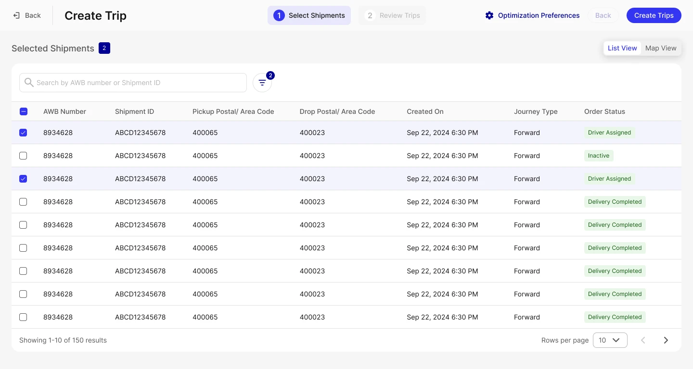
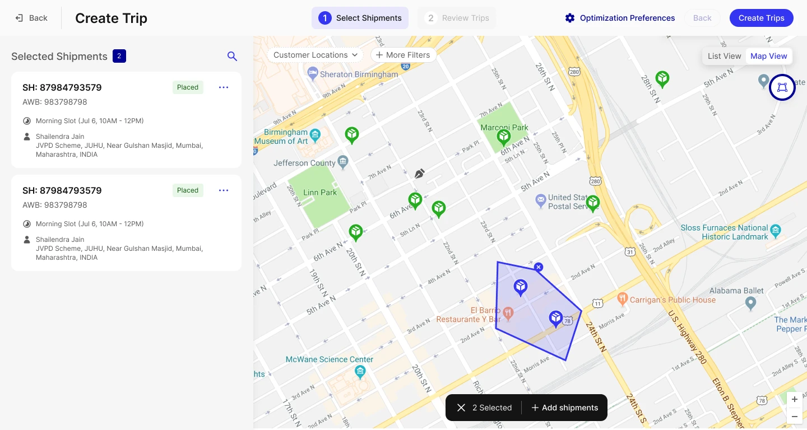
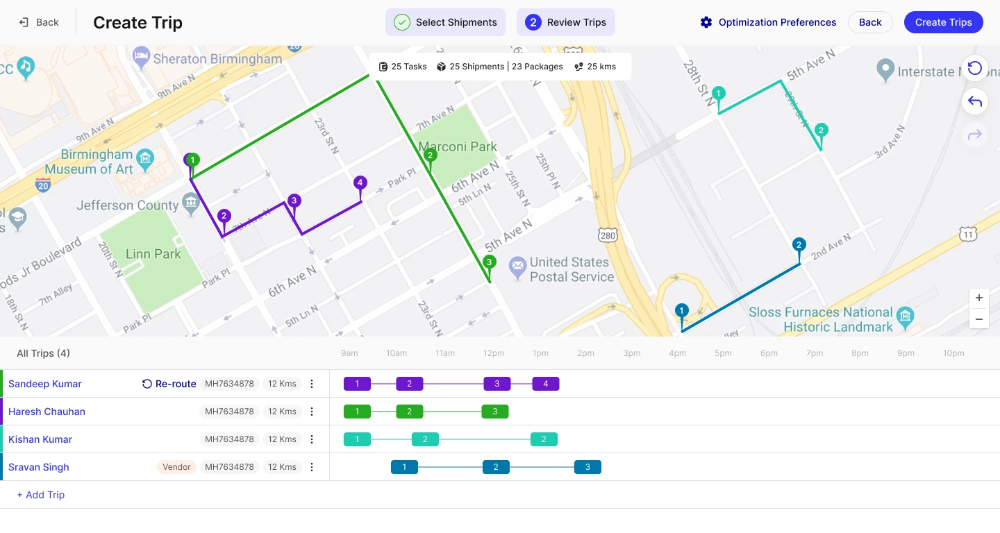
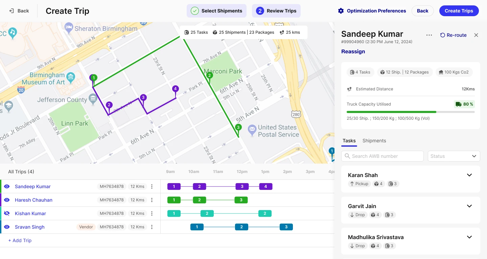

A four-step flow for dispatchers to build a delivery trip: select shipments, review optimized routes, adjust individual driver assignments, and confirm.
1 Select shipments — list view
Dispatchers browse shipments in a sortable table — AWB number, shipment ID, pickup and drop postal codes, and order status — and multi-select the ones to include in a trip.

2 Select shipments — map view
As an alternative to the list, shipments can be selected geographically — drawing a region directly on the map to pull in everything within it.

3 Review trips
Selected shipments are grouped into optimized routes per driver, plotted on the map alongside distance, shipment count, and package count for each trip.

4 Review trips — driver detail
Drilling into a single driver's trip surfaces the ordered task list, so a dispatcher can reassign or reorder stops before confirming.
